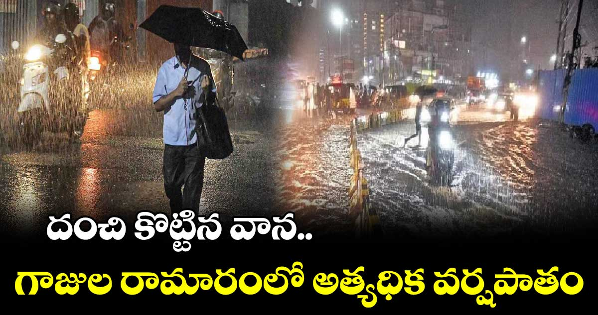

A new record has been registered in the Goods and Services Tax (GST) collections. For the month of April, Rs.1.87 lakh crores were collected. As compared to Rs 1.68 lakh crore in April last year, the collection has registered a growth of 12 percent. This is the first time that this level of collection has been recorded after the implementation of the GST system in the country.
While Rs.1,87,035 crores were collected in the month of April, out of which Rs.38,440 crores were collected under CGST, Rs.47,412 crores under SGST, Rs.89,158 crores from IGST (Rs.34,972 crores on imported goods) and Rs.12,025 crores were collected under cess. Ministry said. The Center said that for the entire financial year 2022-23, Rs 18.10 lakh crore has been collected, which is 22 percent higher than the previous year.
The GST collections of Telugu states have also increased marginally. Andhra Pradesh, which collected Rs.4067 crores in April last year, recorded Rs.4329 crores in April this year. The collection has increased by 6 percent compared to last year. Telangana recorded 13 percent growth in GST collections. Last year it achieved Rs.4,955 crores, but in April this year, it recorded Rs.5,622 crores of GST collections.

It has been raining in Hyderabad for the last two or three days. On the evening of 1st May, there were heavy rains in many places in Hyderabad. There were heavy rains in some places. All the low-lying areas were flooded. Gajularama recorded the highest rainfall of 3.8 cm.
Details of rainfall recorded in Hyderabad
Gajula Ramaram received the highest rainfall of 3.8 cm
2.9 cm in Chandrayaan Gutta, Hayat Nagar.
2.8 centimeters in Malkaj Giri
2.3 cm in Falak Numa..
2 centimeters in Alwal..
1.8 cm in LB Nagar.
1.3 cm in Karwan..
1.1 cm in Sivarampalli..
Three more days..
The Hyderabad Meteorological Center has announced that the state will receive heavy rains for the next four days. It said that there will be rains with gusty winds. It advised people not to come out unless necessary.